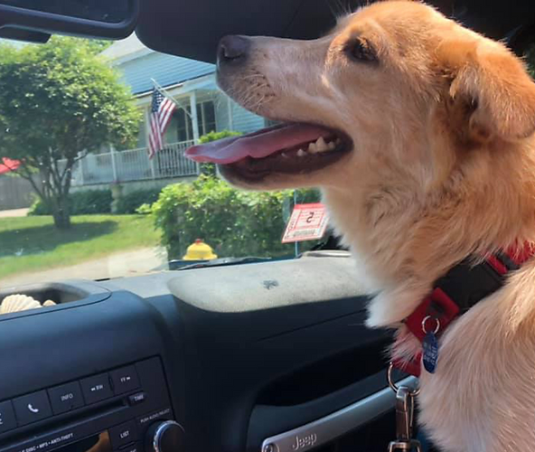
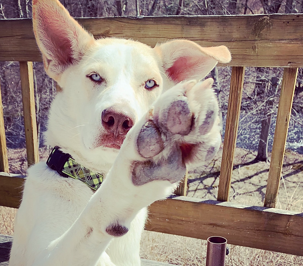

Volunteer
Ruff Tales Rescue is an entirely volunteer-run organization. Everything we are able to accomplish is due to the devotion and unwavering support of our volunteers. There are numerous ways to show your support and volunteer for Ruff Tales Rescue!
Submit a Volunteer Application
APPLICATION PROCESSING
We receive adoption and foster applications daily. We are always looking for more volunteers to help process these applications. The process includes calling 2 personal references, their vet if they have pets or have had pets in the past 10 years, and the landlord if they rent/condo association if they own a condo. We provide a processing form with a list of questions to ask and a guide to answer any questions you may have. This is not very time consuming, but it's so very important!
HOME VISITS
We complete a home visit for each applicant. We provide a form with the things you'll want to ask/address with a potential adopter or foster family. Typically, a home visits takes 15-30 minutes and is a critical part of our adoption and foster processes. We are always looking for volunteers in MA, NH, CT and RI.
EVENT VOLUNTEER
We schedule adoption events every weekend except for holiday weekends. Our events rotate between MA, NH & RI; we need volunteers to transport dogs to & from events; dog handlers who will 'study up' on the dog they are representing in order to answer basic questions about that dog; and volunteers to take pictures or our dogs at events for their Facebook albums and our website.
TRANSPORT
We always need help transporting our pups! From the quarantine facilities to their foster families, to adoption events where many of our pups meet their forever families, or to their vet appointments! Help is needed all throughout New England. Miles are tax-deductible and you get a chance to hang out with our amazing dogs!
FUNDRAISING
We are always looking for innovative and passionate people to help brainstorm ways to raise money, write grant applications, contact business for donations, etc.
GRAPHIC DESIGN

We need volunteers with an eye for design to help us design event promos and flyers, Facebook cover photos, social media posts, and more!
PHOTOGRAPHY
Have an eye for photography and love dogs? We are always in need of photographers to donate their time to take pictures at adoption even